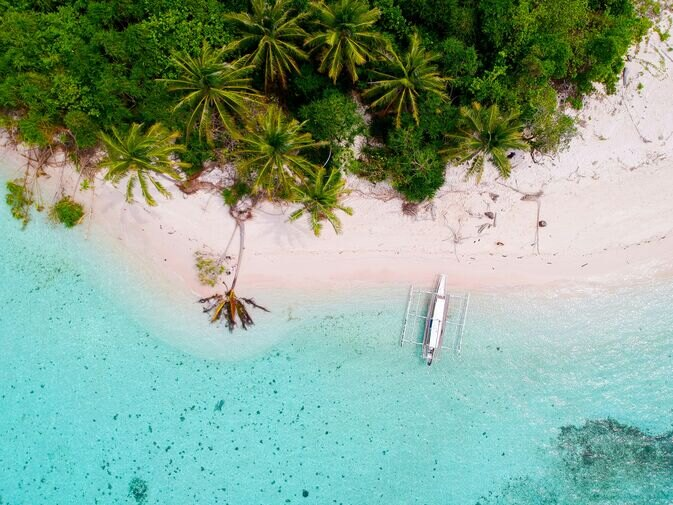
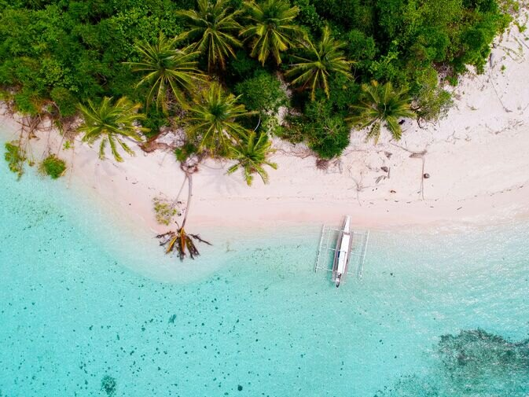

Coron
Embrace the allure of Coron, a jewel of the Philippines where nature's artistry unveils a realm of adventure and serenity. Here, the turquoise waters whisper tales of maritime lore, while verdant cliffs stand as ancient guardians over flourishing marine sanctuaries.Each sunrise unveils a canvas of endless exploration, from the mysteries veiled within its historic wrecks to the gentle rhythm of island life.
 


As you step onto the sands of Coron, you're not just visiting a destination, but embarking on a voyage where every moment is a whisper of the earth's ancient allure. Welcome to Coron, where nature invites you to explore the harmony between adventure and tranquility.As the tale of Coron weaves through the pages of exploration and serenity, the whispers of adventure beckon the soul to delve deeper into the heart of this maritime haven. The dance of the turquoise waves with the verdant cliffs narrates a realm saga where tranquillity romances the thrill of discovery. With every sunrise, Coron unveils a canvas of limitless exploration, from the historical echoes in its sunken wrecks to the rhythmic allure of its island life.